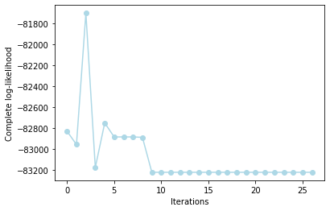

FunCC¶
This page references the official documentation of FunCC.
Method Description¶
FunCC is a non-parametric, greedy bi-clustering algorithm for matrices whose entries are continuous curves. It extends the Cheng & Church strategy to the functional domain and optionally co-estimates curve alignment (phase registration). The key steps are summarized below.
Functional Data Representation Discrete observations are smoothed into continuous curves \(f_{ij}(t)\), forming an \(n \times m\) functional matrix.
Ideal Bi-Cluster Model & H-score
Within a bi-cluster \(B(I,J)\) each curve is modeled as
\[f_{ij}(t) = \mu(t) + \alpha_i(t) + \beta_j(t)\]where \(\mu\) is the cluster mean curve and \(\alpha_i,\beta_j\) capture row- and column-specific deviations. The H-score quantifies within-cluster dispersion via the average squared \(L^2\) distance to the fitted template.
Greedy Iterative Search (Functional Cheng & Church)
Multiple-node deletion: remove rows/columns whose contribution exceeds \(\theta \cdot H\).
Single-node deletion: iteratively drop the worst row/column until \(H < \delta\).
Node addition: re-introduce previously removed rows/columns that do not increase \(H\).
After a cluster is finalized, assigned elements are masked; Bimax locates the largest remaining sub-matrix and the process repeats.
Optional Curve Alignment
A shift warping \(w_{ij}(t)=t+q_{ij}\) is estimated per curve to minimize the squared \(L^2\) distance to the current template. Alignment and template updates iterate until convergence.
Parameter Tuning
\(\delta\) balances cluster quality vs. quantity.
\(\theta\) controls the aggressiveness of multiple-node deletion.
Visualization & Interpretation
FunCC outputs non-exhaustive, non-overlapping bi-clusters described by \(\mu(t)\) and row/column effects, revealing interpretable spatio-temporal patterns.
Function¶
This method provides four core functions: lbm_sim_data, lbm_bifunc and FDPlot.lbm_fdplot. In this section, we detail their respective usage, aswell as parameters, output values and usage examples for each function.
lbm_sim_data¶
lbm_sim_data generates simulated data according to the funLBM model with K=4 groups for rows and L=3 groups for columns.
lbm_sim_data(n = 100, p = 100, t = 30, bivariate = False, noise = None, seed = 111)
Parameter¶
Parameter |
Description |
|---|---|
n |
integer, the number of rows (individuals) of the simulated data array. |
p |
integer, the number of columns (functional variables) of the simulated data array, |
t |
integer, the number of measures for the functions of the simulated data array. |
bivariate |
bool, whether to generate bivariate simulated data. Default is False. |
noise |
numeric or None, the noise intensity of simulated data. Default is 0. |
seed |
integer, random seeds each time when data is generated. Default is 111. |
Value¶
The function lbm_sim_data has two types of outputs: one is non-bivariate data, which is a three-dimensional matrix; the other is bivariate data, which includes two three-dimensional matrices.
data: array, if bivariate=False, outputs data array of size n x p x t. If bivariate=True, outputs two distinct n x p x t datasets.
row_clust: array, group memberships of rows for evaluation.
col_clust: array, group memberships of columns for evaluation.
Example¶
from BiFuncLib.simulation_data import lbm_sim_data
lbm_simdata1 = lbm_sim_data(n = 100, p = 100, t = 30, seed = 1)
data1 = lbm_simdata1['data']
lbm_simdata2 = lbm_sim_data(n = 50, p = 50, t = 15, bivariate = True)
data2 = [lbm_simdata2['data1'],lbm_simdata2['data2']]
lbm_bifunc¶
lbm_bifunc performs model fitting.
lbm_bifunc(data, K, L, maxit = 50, burn = 25, basis_name = 'fourier', nbasis = 15, gibbs_it = 3, display = False, init = 'funFEM')
Parameter¶
Parameter |
Description |
|---|---|
data |
array or list, a data array of size n x p x t or a list contains two distinct n x p x t datasets. |
K |
integer or list, the number of row clusters. If It is a list, the function performs grid search for best K. |
L |
integer or list, the number of column clusters. If It is a list, the function performs grid search for best L. |
maxit |
integer, the maximum number of iterations of the SEM-Gibbs algorithm. Default is 100. |
burn |
integer, the number of of iterations of the burn-in period. Default is 50. |
basis_name |
str, the name(‘fourier’ or ‘spline’) of the basis functions used for the decomposition of the functions. Default is ‘fourier’. |
nbasis |
integer, number of the basis functions used for the decomposition of the functions. Default is 15. |
gibbs_it |
integer, number of Gibbs iterations. Default is 3. |
display |
bool, if true, information about the iterations is displayed. Default is False. |
init |
str, The type of initialization: ‘random’, ‘kmeans’ or ‘funFEM’. Default is ‘funFEM’. |
Value¶
The function lbm_bifunc outputs a dict including clustering results and information of the model.
prms: dict, a dict containing all fitted parameters for the best model (according to ICL).
Z: array, the dummy matrix of row clustering.
W: array, the dummy matrix of column clustering.
row_clust: list, the group memberships of rows.
col_clust: liat, the group memberships of columns.
allPrms: dict, a dict containing the fitted parameters for all tested models.
loglik: array, an array contains all the log-likelihood of the iterations.
icl: numeric, the value of ICL for the best model.
allRes: list, if perform grid search for K and L, the function outputs information for all the models.
criteria: list, if perform grid search for K and L, the function outputs the ICL value for each model.
If display=True, the following information will be returned.

Example¶
from BiFuncLib.simulation_data import lbm_sim_data
from BiFuncLib.lbm_bifunc import lbm_bifunc
from BiFuncLib.lbm_main_func import ari
lbm_simdata1 = lbm_sim_data(n = 100, p = 100, t = 30, seed = 1)
data1 = lbm_simdata1['data']
lbm_res = lbm_bifunc(data1, K=4, L=3, display=True, init = 'kmeans')
print(ari(lbm_res['col_clust'],lbm_simdata1['col_clust']))
print(ari(lbm_res['row_clust'],lbm_simdata1['row_clust']))
# Grid search for K
lbm_simdata2 = lbm_sim_data(n = 50, p = 50, t = 15, bivariate = True)
data2 = [lbm_simdata2['data1'],lbm_simdata2['data2']]
lbm_res_grid = lbm_bifunc(data2, K=[2,3,4], L=[2,3], init = 'funFEM')
print(ari(lbm_res_grid['col_clust'],lbm_simdata2['col_clust']))
print(ari(lbm_res_grid['row_clust'],lbm_simdata2['row_clust']))
It is worth noting that the ari function computes the Adjusted Rand Index (ARI), which compares two clustering partitions to evaluate the accuracy of the model’s classification. The function takes two sequences (lists or arrays) as input and returns a value between 0 and 1; the closer this value is to 1, the better the agreement between the two partitions.
FDPlot.lbm_fdplot¶
FDPlot.lbm_fdplot produces various kinds of visualizations.
FDPlot(result).lbm_fdplot(data, types='blocks')
Parameter¶
Parameter |
Description |
|---|---|
result |
dict, a clustering result generated by lbm_bifunc function. |
types |
str, The type of plot to display. Possible plots are ‘blocks’ (default), ‘means’, ‘evolution’, ‘likelihood’ and ‘proportions’. |
Value¶
Here we illustrate the outputs of the plot function under different class configurations.
types=’blocks’
This setting outputs the functional images of the block matrix.
|
|
||
|
|
||
|
|
|


types=’means’
This setting outputs the functional images of the estimated functional means.
|
|


{kind=link}
{kind=link}
{kind=link}
{kind=link}
{kind=link}
{kind=link}
types=’proportions’
This setting outputs the row and column mixing proportions respectively.

types=’evolution’
This setting outputs the evolution of the SEM-Gibbs estimates for model parameters along the iterations.

types=’likelihood’
This setting outputs the behaviour of the complete-data likelihood over the iterations of the functional LBM algorithm.
{kind=link}
Example¶
from BiFuncLib.FDPlot import FDPlot
from BiFuncLib.simulation_data import lbm_sim_data
from BiFuncLib.lbm_bifunc import lbm_bifunc
lbm_simdata1 = lbm_sim_data(n = 100, p = 100, t = 30, seed = 12)
data1 = lbm_simdata1['data']
lbm_res = lbm_bifunc(data1, K=4, L=3, display=False, init='kmeans')
FDPlot(lbm_res).lbm_fdplot('proportions')
FDPlot(lbm_res).lbm_fdplot('evolution')
FDPlot(lbm_res).lbm_fdplot('likelihood')
FDPlot(lbm_res).lbm_fdplot('blocks')
FDPlot(lbm_res).lbm_fdplot('means')